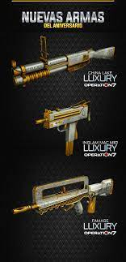

Operation 7
Operation7 es un juego de acción en primera persona que se juega con el teclado y con el ratón. El teclado se utiliza para la mayoría de las acciones - los movimientos (avanzar, retroceder, girar a la izquierda, girar a la derecha, saltar, agacharse), la gestión del equipamiento (cambiar de armas, disparar, recargar, encender la linterna) y la comunicación (escrita u oral). El ratón sirve para dirigir la vista del jugador y del arma usando una mira inmóvil que está en el centro de la pantalla; también sirve para disparar al enemigo con el clic izquierdo. El jugador puede activar la función secundaria del arma que porte con el botón derecho del ratón como la mira de un rifle de francotirador, el silenciador para ciertas pistolas o para asestar un golpe más fuerte con el cuchillo. La interfaz se compone de diferentes elementos que se distribuyen en la periferia de la pantalla. En la parte inferior izquierda se encuentra la posición del jugador, su vida y el radar que muestra la vista del mapa así como los jugadores del equipo, también se muestra la posición de los oponentes que están en el campo de visión de los miembros del equipo además de la posición de la bomba. En la esquina inferor derecha el jugador puede ver el resto de sus municiones y en la esquina superior derecha los asesinatos y eliminaciones que han transcurrido en los últimos segundos. En la zona superior central de la pantalla se encuentra un marcador que muestra los puntajes en modo de equipo.
Modos de juego
El juego tiene diferente modos de juegos, tales como.Survival En este modo de juego los jugadores al morir no reaparecen sino hasta que mueran todos lo participantes de algún equipo. Demolición En este modo de juego se definen dos equipos: los "Terroristas" y "Anti-Terroristas". El objetivo de los terroristas es colocar una bomba en una de las zonas definidas y el de los antiterroristas es desactivar la bomba o impedir su activación. En caso de ser efectivamente plantada la bomba, esta estalla al cabo de 45 segundos dando la victoria inmediata a los terroristas. Al activar la bomba, los antiterroristas deben de abrir camino hacia ella para desactivarla antes de la cuenta regresiva, si el equipo antiterrorista es abatido antes o después de la activación de la bomba, se pierde la ronda, en la tienda del juego es posible comprar un ítem que reduce el tiempo de desactivacion/activación a la mitad. La explosión mata o daña a todos los que estén dentro del alcance dañino de la misma, aunque esto solo es visual ya que las muertes no se ven reflejadas en el score del/los jugador/es. En caso de que los antiterroristas hayan matado a todos los terroristas y estos ya hayan plantado la bomba, los antiterroristas no ganarán por eliminación de contrarios, deben desactivar la bomba obligatoriamente antes de que explote o perderán.8 Líder En este modo de juego se definen dos equipos, en el cual se define un "general" aleatoriamente al principio de cada ronda. El objetivo de este modo es eliminar al general contrario sin perder al del equipo.8 Deathmatch En este modo de juego se definen dos equipos, el objetivo de este modo es eliminar al equipo contrario hasta alcanzar el límite de bajas establecido. Este puede variar desde 50, 100 y 200 puntos.810 Mantener la línea En este modo consiste en levantar 5 banderas que están ubicadas en lugares específicos del mapa, si el otro equipo puso una bandera pueden bajarla y poner la de su equipo, gana el que completa las 5 banderas de su color o el que tenga más banderas de su color cuando se acabe el tiempo. Modo Zombi El objetivo de este modo de juego es sobrevivir a los zombis y cumplir misiones específicas para ganar. Modo AI El modo 'AI' o Inteligencia Artificial consiste en jugar en contra de un número previamente establecido de bots que durante el transcurso de la partida se adaptan a la estrategia de juego de cada jugador, de ese modo la dificultad de juego va aumentando de según la duración de la partida. Fiebre del oro El modo consiste en que un equipo debe robar el oro del equipo contrario contenido en cajas fuertes ubicadas en lugares específicos del mapa y devolverlo a su caja fuerte. Individual En este modo los jugadores se enfrentan en un "todos contra todos", el objetivo es obtener el mayor puntaje de muertes hasta alcanzar el límite de bajas establecido para ganar la partida. Esta puede variar desde 25, 50 y 100.